Alignment of Cooperative and Competitive Communities
ex3-cooccurrence.Rmd
library(dplyr)
#>
#> Attaching package: 'dplyr'
#> The following objects are masked from 'package:stats':
#>
#> filter, lag
#> The following objects are masked from 'package:base':
#>
#> intersect, setdiff, setequal, union
library(fsmc)
library(tidyr)
library(purrr)Data
The set of competitve and cooperative communities both contain 100 communities.
Cooperative Communities
In the cooperative dataset there are 100 communities, made up from a total of 50 species. Each community consists of 10 species.
coop_url <- "https://raw.githubusercontent.com/admarhi/fsmc-data/main/cooccurrence/cooperative.csv"
coop_tb <- readr::read_csv(coop_url)
#> Rows: 51854 Columns: 5
#> ── Column specification ────────────────────────────────────────────────────────
#> Delimiter: ","
#> chr (3): community, species, metabolites
#> dbl (2): fluxes, smetana
#>
#> ℹ Use `spec()` to retrieve the full column specification for this data.
#> ℹ Specify the column types or set `show_col_types = FALSE` to quiet this message.
glimpse(coop_tb)
#> Rows: 51,854
#> Columns: 5
#> $ community <chr> "coop_0", "coop_0", "coop_0", "coop_0", "coop_0", "coop_0"…
#> $ species <chr> "Rothia_nasimurium_PT_32", "Exiguobacterium_sibiricum_255_…
#> $ metabolites <chr> "acald", "acald", "ala__D", "ala__D", "ala__L", "ala__L", …
#> $ fluxes <dbl> 1, -1, 1, -1, 1, -1, 1, -1, 1, -1, 1, -1, 1, -1, 1, -1, 1,…
#> $ smetana <dbl> 0.0128, -0.0128, 0.0096, -0.0096, 0.0352, -0.0352, 0.0128,…
coop_tb %>%
group_by(community) %>%
summarise(n_species = length(unique(species)))
#> # A tibble: 100 × 2
#> community n_species
#> <chr> <int>
#> 1 coop_0 10
#> 2 coop_1 10
#> 3 coop_10 10
#> 4 coop_11 10
#> 5 coop_12 10
#> 6 coop_13 10
#> 7 coop_14 10
#> 8 coop_15 10
#> 9 coop_16 10
#> 10 coop_17 10
#> # ℹ 90 more rowsBacillus_humi_DSM_16318 is the only species that only acts as a donor, all 49 other species are both donors and receivers.
coop_tb %>%
group_by(species) %>%
filter(all(fluxes > 0)) %>%
pull(species) %>%
unique()
#> [1] "Bacillus_humi_DSM_16318"Alignment
Create MiCo objects from the data.
coop <-
coop_tb %>%
mutate(species = as.character(species)) %>%
nest(.by = community) %>%
pull(data) %>%
setNames(unique(coop_tb$community)) %>%
imap(~newMiCo(data = .x, name = .y))Create an alignment of all cooperative communities.
coop_alig <- newMiCoAl(coop)Competitive Communities
In the competitive dataset there are 50 species in total, with Bacillus_humi_DSM_16318 being the only species that only acts as a donor, all 49 other species are both donors and receivers.
comp_url <- "https://raw.githubusercontent.com/admarhi/fsmc-data/main/cooccurrence/competitive.csv"
comp_tb <- readr::read_csv(comp_url)
#> Rows: 32306 Columns: 5
#> ── Column specification ────────────────────────────────────────────────────────
#> Delimiter: ","
#> chr (3): community, species, compound
#> dbl (2): flux, smetana
#>
#> ℹ Use `spec()` to retrieve the full column specification for this data.
#> ℹ Specify the column types or set `show_col_types = FALSE` to quiet this message.
glimpse(comp_tb)
#> Rows: 32,306
#> Columns: 5
#> $ community <chr> "comp_0", "comp_0", "comp_0", "comp_0", "comp_0", "comp_0", …
#> $ species <chr> "Bacillus_circulans_NBRC_13626", "Solirubrobacter_soli_DSM_2…
#> $ compound <chr> "4abut", "4abut", "acald", "acald", "ala__L", "ala__L", "co2…
#> $ flux <dbl> 1, -1, 1, -1, 1, -1, 1, -1, 1, -1, 1, -1, 1, -1, 1, -1, 1, -…
#> $ smetana <dbl> 0.210000000, -0.210000000, 0.040000000, -0.040000000, 0.0500…
comp_tb %>%
group_by(community) %>%
summarise(n_species = length(unique(species)))
#> # A tibble: 100 × 2
#> community n_species
#> <chr> <int>
#> 1 comp_0 10
#> 2 comp_1 10
#> 3 comp_10 10
#> 4 comp_11 10
#> 5 comp_12 10
#> 6 comp_13 10
#> 7 comp_14 10
#> 8 comp_15 10
#> 9 comp_16 10
#> 10 comp_17 10
#> # ℹ 90 more rowsCreate MiCo objects from the data.
comp <-
comp_tb %>%
rename(metabolites = "compound", fluxes = "flux") %>%
nest(.by = community) %>%
pull(data) %>%
setNames(unique(comp_tb$community)) %>%
imap(~newMiCo(data = .x, name = .y))Create an alignment of all competitive communities.
comp_alig <- newMiCoAl(comp)Alignment Comparison
The heatmaps below show metabolic functions that were aligned in at
least frac of the communities. The metabolites on the
y-axis are consumed to produce the metabolites on the x-axis.


Competitive Communities 80%
plotAlignmentHeatmap(comp_alig, frac = 0.8)
These results indicate that cooperative communities are functionally more similar to each other than competitive communities. With the minimum alignment set to 50% there is a great discrepancy between the extent of the alignment of cooperative and competitive communities. This becomes even more pronounced in the alignment >80%, here only the glycerol -> glycerol edge is present in competitive communities, while in the cooperative communities the production of hydrogen sulfide and ammonia from a variety of compounds are present.
We can use the compareAlignments function to compare the
alignments and find values, at which the alignments contain the same
number of reactions.
gg <- compareAlignments(
coop_alig, comp_alig,
names = c("cooperative", "competitive"))
gg
We can use plotly to make the plot interactive in order
to easily find relevant values for further analysis.
plotly::ggplotly(gg)From the interactive version of the plot we decide to compare alignments that align ~250 reactions in both, at a fraction of 0.51 (245 reactions) for cooperative and 0.31 (244 reactions) for competitive. The same for 130 reactions, 0.63 and 0.39 for cooperative and competitive respectively.
Comparison of alignments that share 30 reactions
plotAlignmentHeatmap(coop_alig, 0.51)
plotAlignmentHeatmap(comp_alig, 0.31)
Comparison of alignments that share 20 reactions
plotAlignmentHeatmap(coop_alig, 0.63)
plotAlignmentHeatmap(comp_alig, 0.39)
Comparison of alignments that share 20 reactions
plotAlignmentHeatmap(comp_alig, 0.36)
plotAlignmentHeatmap(coop_alig, 0.6)